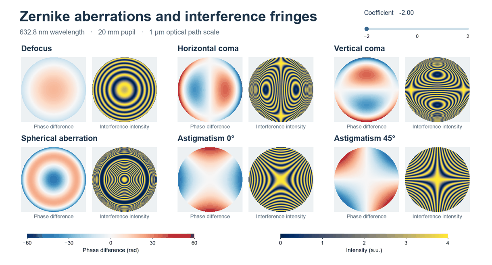

Forward model
The MATLAB script prescribes a phase difference Δφ = 2πcΔZ/λ across a 20 mm circular pupil, with wavelength λ = 632.8 nm and optical path scale Δ = 1 µm. Here c is the dimensionless coefficient and Z is the aberration polynomial used in the script. The interferogram is I = 2[1 + cos(Δφ)].
At zero coefficient the pupil is uniformly bright. Reversing the coefficient reverses the phase map and leaves the intensity pattern unchanged because cosine is even. The sweep uses 40 original samples plus zero.